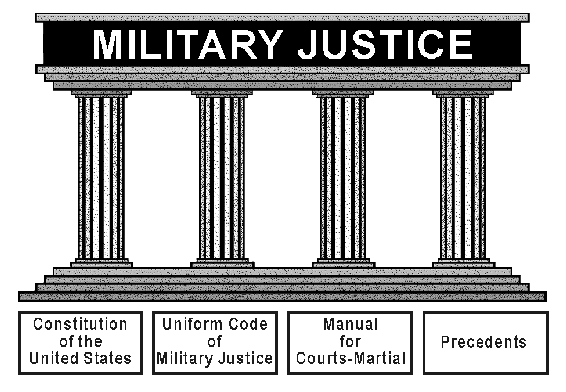

Chapter 7
ENFORCING STANDARDS AND LEGAL ISSUES
Section 7A—Overview
7.1. Introduction.
Air Force commanders at all levels are required to continuously evaluate force readiness and organizational economy, efficiency and effectiveness. The inspection system provides the commander with a credible, independent assessment process to measure the capabilities of assigned forces. Supervisors at all levels play an integral part in this process through continual assessment of personnel, programs and the areas of responsibilities they supervise. Furthermore, when systematic, programmatic or procedural weaknesses are suspected, or to further ensure resources are used effectively and efficiently, Airmen at all levels may visit the Inspector General to report these areas as well as potential fraud, waste or abuse cases. This chapter provides information on the Air Force Inspection System, the Inspector General Complaints Program, and individual standards and punitive actions. All four areas are necessary to enable the Air Force to fulfill our national security obligations efficiently and effectively.
Section 7B—Air Force Inspection System
7.2. Purpose.
The Inspectors General mission is defined in headquarters Air Force mission directive 1-20, The Inspector General, and AFPD 90-2, Inspector General – The Inspection System. The overall purpose of the Air Force inspection system is to enable and strengthen commanders’ effectiveness and efficiency, motivate and promote military discipline, improve unit performance and management excellence up and down the chain of command, in units and staffs, as well as identify issues interfering with effectiveness, efficiency, compliance, discipline, readiness, performance, surety and management excellence. The Inspectors General reports on readiness, economy, efficiency, and state of discipline of Air Force organizations to the Secretary of the Air Force and the Chief of Staff of the Air Force.
7.3. Philosophy.
Inspection is an inherent function of command exercised at every level to evaluate readiness, economy, efficiency and state of discipline. Inspection preparation, if not directly aligned with mission readiness, is inherently wasteful. Units will be inspection ready when commander’s focus on mission readiness and on building a culture of disciplined compliance in which every Airmen does their job right the first time even when no one’s looking. The intent of the Inspector General is to continuously improve the Air Force inspection system so there is an ever-shrinking difference – both real and perceived – between mission readiness and inspection readiness. Each major command commander and Wing commander will appoint an Inspector General who will establish an inspection program consistent with major command mission requirements to inspect unit effectiveness, surety and other inspection program elements. Major Command Inspectors General establish inspection programs consistent with command mission requirements and in accordance with this instruction to assess unit readiness, economy, efficiency, and state of discipline.
7.4. Inspection Types:
7.4.1. Commander’s Inspection Program. A validated and trusted commander’s inspection program is the cornerstone of the Air Force inspection system. The Wing Inspector General is responsible to validate and verify self-assessment programs and independently assess the performance of organizations below the Wing level. The commander’s inspection program should give the Wing Commander, subordinate commanders and wing Airmen the right information at the right time to assess risk, identify areas of improvement, determine root cause and precisely focus limited resources; all aligned with the commander’s priorities and on the commander’s timeline. The commander’s inspection program also facilitates requests for targeted assistance from the major command commander and staff when and where needed. The commander’s inspection program produces two key components: (1) the self-assessment program; and (2) the Wing’s Inspection Program executed under the authority of the Wing Inspector General to validate and verify commander self-assessments are accurate and timely, and independently assess effectiveness of subordinate units and programs. These components provide critical data to leadership about the adequacy of policy, training, manpower, funds, equipment, and facilities.
7.4.2. Unit Effectiveness Inspection. The unit effectiveness inspection integrates elements of compliance and readiness using specific Inspector General Inspection elements to assess the effectiveness of a unit. Conducted by Major Command Inspectors General and the Air Force Inspection Agency on Wings and Wing-equivalents, the unit effectiveness inspection is a continual evaluation of performance throughout the inspection period. This is a photo album versus a snapshot. The unit effectiveness inspection inspects the following four Major Graded Areas: Managing Resources, Leading People, Improving the Unit, and Executing the Mission. The unit effectiveness inspection validates and verifies a wing commander’s inspection program for accuracy and adequacy, and provides an independent assessment of the Wing’s resource management, leadership, process improvement efforts and ability to execute the mission. A unit effectiveness inspection is a multi-year, continual inspection of the unit’s effectiveness, and is intended to help the wing commander understand the areas of greatest risk from undetected non-compliance. The next inspection period begins immediately following the Unit Effectiveness Inspection Capstone event.
7.4.3. Nuclear Surety Inspection. Nuclear Surety Inspections are an integral part of the Air Force Inspection System and are considered a snapshot within a wing’s Unit Effectiveness Inspection cycle. Major Command Inspector General’s use performance and compliance-based inspections to evaluate a unit’s ability to manage nuclear resources while complying with all nuclear surety standards. Additionally, during a Nuclear Surety Inspection a unit’s capability to safely and reliably receive, store, secure, assemble, transport, maintain, load, mate, lock/unlock, test, render safe and employ nuclear weapons is evaluated.
7.5. Inspection Elements:
7.5.1. Self-Assessment Program. Led by unit commanders in accordance with Title 10, United States Code, Section 8583, the self-assessment program provides commanders with a means for internal assessment of a Wing’s overall health and complements external assessments. The primary purpose of the self-assessment program for the commander is to accurately identify and report issues to the command chain. Self-Assessment programs may include a wide variety of internal assessments or evaluations. At a minimum, Commanders must utilize Management Internal Control Toolset and applicable self-assessment communicators. Commanders are encouraged to include additional measures as directed by superior Commanders, functional directives, or proven lessons and experience.
7.5.2. Management Internal Control Toolset. Management Internal Control Toolset is an Air Force program of record used to facilitate self-assessments and communicate compliance, risk and program health. Management Internal Control Toolset provides the supervisor and command chain, from Squadron Commander to Secretary of the Air Force, tiered visibility into user-selected compliance reports and program status. Management Internal Control Toolset also allows functional area managers the ability to virtually monitor unit performance and status. Additionally, Management Internal Control Toolset can assist Inspectors General by informing the risk-based sampling strategy and formulating specific inspection methodology and Inspector General Team composition for the commander’s inspection program and on-site unit effectiveness inspection events.
7.5.3. Self-Assessment Communicator. A Self-Assessment Communicator is a two-way communication tool designed to improve compliance with published guidance and communicate risk and program health up and down the chain of command in near real-time. Compliance with a self-assessment communicator does not relieve individual Airmen from complying with all statutory and regulatory requirements in Air Force instructions and directives at the local, state or federal level. As a self-assessment tool, Self-Assessment Communicators ask Airmen at the shop-level to self-report compliance or non-compliance. While the responses are assumed to be truthful and timely, self-assessment communicators are frequently verified for accuracy and currency by wing Inspectors General and major command Inspectors General.
7.5.4. Inspector General’s Evaluation Management System. The Inspectors General Evaluation Management System is the official program of record for the Air Force Inspection System. Inspectors General will use Inspectors General Evaluation Management System to record the unit’s overall rating, identify deficiencies, track corrective action plans, and post the final inspection report.
7.6. Gatekeeper Program.
The Gatekeeper program is used to build schedules, synchronize and align Air Force and non-Air Force inspection requirements.
Section 7C—Inspector General Complaints Program
7.7. Program Policy and Mission Focus.
The Air Force Inspector General Complaints program is a leadership tool that indicates where command involvement is needed to correct systematic, programmatic, or procedural weaknesses. The program also ensures effective and efficient use of resources; resolves problems affecting the Air Force mission promptly and objectively; creates an atmosphere of trust in which issues can be objectively and fully resolved without retaliation or fear of reprisal; and assists commanders in instilling confidence in Air Force leadership. The primary charge of the Inspector General is to sustain a credible Air Force Inspector General system by ensuring the existence of responsive complaint investigations, and fraud, waste, and abuse programs characterized by objectivity, integrity, and impartiality. Only the Inspector General may investigate allegations of reprisal and restriction under the Military Whistleblower’s Protection Act. The Inspector General ensures the concerns of Regular Air Force, Reserve, and Guard members; civilian employees; family members; retirees; and the best interests of the Air Force are addressed through objective fact-finding.
7.8. Installation Inspector General Program.
The concept of separate, full-time installation Inspectors General was implemented to remove any perceived conflict of interest, lack of independence, or apprehension by Air Force personnel. This came as a result of the previous practice of assigning a chain of command and Inspector General roles to the same official. The installation Inspector General is organized as a staff function reporting directly to the installation commander.
7.8.1. Inspector General Role.
Inspectors General are the “eyes and ears” of the commander. They execute the commander’s inspection program, validating and verifying unit self-assessments and providing the commander an independent assessment of unit effectiveness: (1) they inform the commander of potential areas of concern as reflected by trends; (2) function as the fact finder and honest broker in the resolution of complaints; (3) educate and train commanders and members of the base population on their rights and responsibilities in regard to the Air Force Inspector General system; and (4) help commanders prevent, detect, and correct fraud, waste and abuse; and mismanagement. Personal complaints and fraud, waste, and abuse disclosures help commanders discover and correct problems that affect the productivity and morale of assigned personnel. Resolving the underlying cause of a complaint may prevent more severe symptoms or costly consequences, such as reduced performance, accidents, poor quality work, poor morale, or loss of resources. Even though allegations may not be substantiated, the evidence or investigation findings may reveal systemic morale or other problems that impede efficiency and mission effectiveness.
7.8.2. Investigations Not Covered and Complaints Not Appropriate.
The following are not covered under the Inspector General Complaint Resolution program:
7.8.2.1. Administrative inquiries or investigations governed by other policy directives and instructions. These inquiries and investigations include:
7.8.2.1.1. Commander-directed inquiries and investigations.
7.8.2.1.2. Air Force Office of Special Investigations or security forces investigations.
7.8.2.1.3. Investigations of civilian employees who have specific appeal rights under law or labor union agreements.
7.8.2.2. Investigations under the authority of the Uniform Code of Military Justice (UCMJ) or the Manual for Courts-Martial, line of duty or report of survey investigations, quality assurance in the Air Force medical service boards, Air Force mishap or safety investigations, military equal opportunity treatment or civilian equal employment opportunity programs, and medical incident investigations.
7.8.2.3. Matters normally addressed through other established grievance or appeal channels unless there is evidence these channels mishandled the matter or process. If a policy directive or instruction provides a specific means of redress or appeal to a grievance, complainants must exhaust these means before filing an Inspector General complaint. Complainants must provide some relevant evidence that the process was mishandled or handled prejudicially before an Inspector General channel will process a complaint of mishandling. Dissatisfaction or disagreement with the outcome or findings of an alternative grievance or appeal process is not a sufficient basis to warrant an Inspector General investigation. Note: AFI 90-301, Inspector General Complaints Resolution, Table 3.6, assists Inspectors General in determining if a complaint belongs in other channels.
7.8.3. Filing an Inspector General Complaint.
Air Force military members and civilian employees have a duty to promptly report fraud, waste and abuse or gross mismanagement; a violation of law, policy, procedures, or regulations; an injustice; abuse of authority, inappropriate conduct, or misconduct; and a deficiency or like condition to an appropriate supervisor or commander, to an Inspector General or other appropriate inspector, or through an established grievance channel. Complainants should attempt to resolve the issues at the lowest possible level using command channels before addressing them to a higher level or the Inspector General. The immediate supervisory command chain can often resolve complaints more quickly and effectively than a higher level not familiar with the situation. Use the Inspector General system when referral to the chain of command is futile, and there is fear of reprisal.
7.8.4. Procedures for Filing a Complaint.
Table 7.1 outlines the procedures for filing an Inspector General complaint. Complainants complete an Air Force Form 102, Inspector General Personal and Fraud, Waste and Abuse Complaint Registration, briefly outlining the facts and relevant background information related to the issue or complaint. AFI 90-301 outlines the procedures. Complainants may also file anonymously through an Air Force fraud, waste, and abuse hotline, the Defense hotline, or directly with an Inspector General.
Table 7.1. How to File an Inspector General Complaint. |
|
Step |
Action |
1 |
If unable to resolve the complaint in supervisory channels, review AFI 90-301, Table 3.6, to determine if the complaint should be filed with the Inspector General. Complainants should file a complaint if they reasonably believe inappropriate conduct has occurred or a violation of law, policy, procedure, instruction, or regulation has been committed. |
2 |
Complete the personal data information on Air Force Form 102 (typed or printed legibly), the preferred format for submitting complaints, so it may easily be reproduced. |
3 |
Briefly outline the facts and relevant background information related to the issue or complaint on Air Force Form 102 in chronological order. The complainant should include witnesses who can corroborate the allegations or provide additional evidence relevant to the issues. The complainant is responsible for describing what each recommended witness can provide regarding the issues and/or allegations. |
4 |
List the allegations of wrongdoing briefly, in general terms, and provide supporting narrative detail including chronology and documents later when interviewed. Allegations should be written as bullets and should answer: 1. When did the issue occur? 2. Where did the issue occur? 3. Who took the action in question 1 (e.g., Major John A. Smith, XXSQ/CC)? 4. What did the person (or people) in question 3 do (e.g., gave a letter of reprimand, wasted resources)? 5. To whom did the action in question 4 happen (e.g., complainant, Staff Sergeant Smith, etc)? 6. What law, regulation or policy was violated (e.g., AFI 36-2803, Title 10, United States Code., etc)? 7. What remedy is being sought? |
5 |
If more than one year has elapsed since learning of the alleged wrong, the complainant should also include: 1. The date the complainant first became aware of the conduct. 2. How the complainant become aware of the conduct. 3. Why the complainant delay filing the complaint. |
6 |
Submit the completed Air Force Form 102 to any Air Force Inspector General and set up a follow-on meeting to discuss the complaint. |
7 |
If the Inspector General is named in the complaint, contact the next higher-level Inspector General. |
7.8.5. Complainants’ Rights.
Complainants have the right to:
7.8.5.1. File an Inspector General complaint at any level without notifying or following the chain of command.
7.8.5.2. File a complaint with an Inspector General without fear of reprisal.
7.8.5.3. Request withdrawal of their complaint in writing; however, Inspectors General may still look into the allegations at their discretion.
7.8.5.4. Request the next higher level Inspector General review their case within 90 days of receiving a final Inspector General response. Must give specific reasons as to why the complainant believes the original investigation was not valid or adequate; simply disagreeing with the findings is not sufficient for an additional Inspector General review.
7.8.5.5. Submit complaints anonymously.
7.8.5.6. Submit a complaint on behalf of another individual or even when not the wronged party.
7.8.5.7. Request whistleblower protection after making or planning to make a protected communication.
7.8.5.7.1. Reprisal occurs when a responsible management official takes (or threatens to take) an unfavorable personnel action; or withholds (or threatens to withhold) a favorable personnel action, to retaliate against a member of the armed forces who made, or prepared to make, a protected communication. Any lawful communication, regardless of the subject, to an Inspector General or Congress, is considered protected. Additionally, this type of communication is protected when a member who reasonably believes he/she has evidence of a violation of law or regulation (regardless of whether he/she is the victim), discloses this to an authorized recipient in the form of a lawful communication.
7.8.5.7.2. Title 10, United States Code, Section 1034, Protected Communications; Prohibition of Retaliatory Personnel Actions, also states that a military member may not be restricted or prohibited from making a lawful communication to the Inspector General or a member of Congress (for example, making a protected communication). Restriction can result from either private or public statements that may reasonably discourage Air Force members from contacting the Inspector General or a member of Congress. For example, a first sergeant who directs a member to stay within his chain of command because the member told his supervisor he was going to complain to his Congressman about an upcoming deployment has probably restricted.
7.8.5.7.3. The Department of Defense Inspector General provides a quarterly report to Congress detailing the Services’ Inspector General allegations of reprisal, and restricted (if substantiated, amounts to a violation of Federal law). In the Air Force, most allegations in these areas are against First Sergeants and senior enlisted personnel.
7.8.6. Complainants’ Responsibilities.
Complainants must file within one year of learning of the alleged wrong. Inspector General complaints not reported within one year may seriously impede the gathering of evidence and testimony. The Inspector General may dismiss a complaint if, given the nature of the alleged wrong and the passage of time, there is reasonable probability that insufficient information can be gathered to make a determination, or no special Air Force interests exist to justify investigating the matter. Complainants must cooperate with investigators by providing factual and relevant information regarding the issues. Complainants must understand that they are submitting official statements; therefore, they remain subject to punitive action for knowingly making false statements and submitting other unlawful communications.
7.8.7. Confidentiality Policy.
The Inspector General makes every effort to protect the identity of complainants from anyone outside Inspector General channels. Inspectors General may release the name of a complainant only on an official need-to-know basis. Investigating officers do not divulge a complainant’s name to a subject or witness or permit them to read the complaint without the Inspectors General or appointing authority’s written permission.
Section 7D—Individual Standards
7.9. Enforcing Individual Standards.
Commanders, supervisors, and other persons in authority can issue administrative counseling, admonitions, and reprimands. These actions are intended to improve, correct, and instruct subordinates who depart from standards of performance, conduct, bearing, and integrity, on or off duty, and whose actions degrade the individual and unit’s mission. Written administrative counseling, admonitions, and reprimands are subject to the rules of access, protection, and disclosure outlined in the Privacy Act of 1974. The same rules apply to copies kept by supervisors and commanders and those filed in an individual’s unfavorable information file or the unit’s personnel information file. Raters must consider making comments on performance reports when the ratee receives any of these adverse actions. The following paragraphs discuss actions a commander may take to correct an individual’s behavior without resorting to punishment under the UCMJ.
7.10. Administrative Counseling, Admonitions, and Reprimands.
Administrative counseling, admonitions, and reprimands are quality force management tools available to supervisors, superiors, and commanders. These tools are corrective in nature, not punitive. When properly used, they help maintain established Air Force standards and enhance mission accomplishment. When a member departs from standards, there are many factors to consider in determining what action, if any, is appropriate.
7.10.1. AFI 36-2907, Unfavorable Information File (UIF) Program.
7.10.1.1. Chapter 4 contains guidance on administrative counseling, admonitions, and reprimands. The decision to issue a letter of counseling, admonition, or reprimand should be based primarily on two factors.
7.10.1.1.1. First is the nature of the incident. Administrative counseling, admonitions, and reprimands may be administered for any departure from Air Force standards. Unlike nonjudicial punishment under Article 15 of the UCMJ, they are NOT limited to offenses punishable by the UCMJ. (These disciplinary measures may also be issued to Reserve members who commit an offense while in civilian (non-Title 10) status.) The seriousness of the departure should be considered before deciding what type of action is appropriate to take.
7.10.1.1.2. Second is the previous disciplinary record of the member. Counseling, admonitions, and reprimands should be used as part of a graduated pattern of discipline in response to repeated departures from standards. In other words, each time a service member departs from standards, the response should usually be more severe.
7.10.1.2. Standard of Proof. While no specific standard of proof applies to administrative action proceedings, commanders should utilize the “preponderance of the evidence” standard when evaluating the evidence and every element of the offenses committed. A preponderance of the evidence means simply the greater weight of credible evidence. Whether such proof is available should be considered before initiating the administrative action. If such proof is lacking, administrative action is susceptible to being found to be legally unsupportable and, as a result, could be set aside. There is no requirement to prove any allegation beyond a reasonable doubt.”
7.10.2. Letter of Counseling and Air Force IMT 174, Record of Individual Counseling.
A letter of counseling is the lowest level of administrative action. Counseling helps people develop good judgment, assume responsibility, and face and solve their problems. Counselors help subordinates develop skills, attitudes, and behaviors consistent with maintaining the Air Force readiness. First-line supervisors, first sergeants, and commanders routinely counsel individuals verbally or in writing, giving advice and reassuring subordinates about specific situations. A verbal counseling may be recorded on a record of individual counseling.
7.10.3. Letter of Admonishment.
An admonishment is more severe than a letter of counseling or a record of individual counseling. Use an admonishment to document an infraction serious enough to warrant a letter of admonishment. Do not use it when a reprimand is more appropriate.
7.10.4. Letter of Reprimand.
A reprimand is more severe than a letter of counseling or letter of admonishment and indicates a stronger degree of official censure. Commanders may elect to file a letter of reprimand in a UIF for enlisted personnel.
7.10.5. Issuing the Letter of Counseling, Record of Individual Counseling, Letter of Admonishments, or Letter of Reprimands.
Counseling, admonitions, and reprimands may be either verbal or written. The counseling, admonition, or reprimand should be in writing because the corrective action is more meaningful to the member and the infraction is documented. Letter of counseling, letter of admonishments and letter of reprimands should be typed on letterhead and must comply with the requirements listed below. Failure to follow the requirements for drafting and maintaining these documents could limit the use of the documents in a subsequent proceeding. Failing to include the second endorsement noting the consideration of a response, for example, will likely render a letter of reprimand inadmissible in a later court-martial or discharge proceeding.
7.10.6. Written letter of counseling, letter of admonishments and letter of reprimands must state the following:
7.10.6.1. What the member did or failed to do, citing specific incidents and their dates.
7.10.6.2. What improvement is expected.
7.10.6.3. That further deviation may result in more severe action.
7.10.6.4. That the individual has 3 duty days to respond and provide rebuttal matters (45 days for non-extended active duty reservists).
7.10.6.5. That all supporting documents become part of the record.
7.10.6.6. That the person who initiates the letter of counseling, letter of admonishments and letter of reprimands has three duty days to advise the individual of their decision regarding any comments submitted by the individual.
7.11. UIF.
The UIF provides commanders with an official and single means of filing derogatory data concerning an Air Force member’s personal conduct and duty performance. With some exceptions, the commander has wide discretion as to what should be placed in a UIF and what should be removed.
7.11.1. Mandatory Documents. (See AFI 36-2907, Table 2.2 for additional guidance relating to mandatory UIFs)
The commander must place the following documents in a UIF:
7.11.1.1. Suspended or unsuspended Article 15 punishment of more than 1 month (31 days or more).
7.11.1.2. Court-martial conviction.
7.11.1.3. A civilian conviction where the penalty or actions equivalent to a finding of guilty of an offense which resulted in confinement of 1 year or more or could have resulted in a penalty of confinement for more than one year or death.
7.11.1.4. Control roster actions (see paragraph 7.12).
7.11.2. Optional Documents.
The commander may place the following documents, among others, into a UIF for up to one year:
7.11.2.1. Article 15 when punishment is not suspended or does not exceed one month.
7.11.2.2. A record of conviction by a civilian court or an action equivalent to a finding of guilty for an offense where the maximum confinement penalty authorized for the offense is one year or less.
7.11.2.3. Written letters of reprimand, admonition, or counseling.
7.11.2.4. Confirmed incidents involving discrimination or sexual harassment of personnel.
7.11.3. Initiating and Controlling UIFs.
Commanders at all levels; vice commanders, staff directors, and directors at major commands, field operating agencies, and direct reporting units; and the senior Air Force officer assigned to a joint command have the authority to establish, remove, or destroy UIFs. Commanders refer optional documents (letters of admonishment, letters of counseling, and letters of reprimand) to the offending member along with an Air Force IMT 1058, Unfavorable Information File Action, before establishing a UIF. Note: Mandatory items, such as Articles 15 with punishment exceeding 1 month and court-martial or civilian court convictions, are not referred via Air Force IMT 1058. The individual has 3 duty days to acknowledge the intended actions and provide pertinent information before the commander makes the final decision on placing optional documents in the UIF. The commander advises the individual of his or her final decision; and, if the commander decides to file the information in a UIF, the individual’s response is also filed.
7.11.4. Accessing and Reviewing UIFs:
7.11.4.1. In the course of their Air Force duties, the following individuals are authorized access to a member’s UIF: the member, commander, first sergeant, enlisted performance report reporting and rating officials, force support squadron personnel, Inspector General, inspection team, legal office personnel, military equal opportunity personnel, law enforcement personnel and substance abuse counselors authorized by the commander to review the document in the course of their official Air Force duties.
7.11.4.2. All UIFs require periodic review to ensure continued maintenance of documents in the UIF is proper. The unit commander must review all UIFs within 90 days of assuming or being appointed to command. UIFs are also reviewed when individuals are considered for promotion, reenlistment, permanent change of station, permanent change of assignment, and voluntary or mandatory reclassification or retraining. UIFs are also reviewed annually, with the assistance of the staff judge advocate.
7.11.5. Removing UIFs or Documents within UIFs.
Commanders keep the UIF and documents for the disposition period unless early removal is clearly warranted. AFI 36-2907, Unfavorable Information File (UIF) Program, contains additional guidance on disposition dates. Commanders initiate removal action via Air Force IMT 1058, and the individual acknowledges the action.
7.12. Control Roster.
The control roster is a rehabilitative tool commanders may use to establish a 6-month observation period for individuals whose duty performance is substandard or who fail to meet or maintain Air Force standards of conduct, bearing, and integrity, on or off duty. A single incident of substandard performance or an isolated breach of standards, not likely to be repeated, should not ordinarily be a basis for a control roster action. Commanders should consider prior incidents, acts, failures, counseling, and rehabilitative efforts.
7.12.1. Use.
A commander may direct an enlisted performance report before entering or removing an individual from the roster, or both. The commander cannot place an individual on the roster as a substitute for more appropriate administrative, judicial, or nonjudicial action. Being on the roster does not shield an individual from other actions. An individual cannot remain on the roster for more than 6 consecutive months. If a member is not rehabilitated in this time, the commander initiates more severe action.
7.12.2. Initiating and Maintaining the Control Roster.
Commanders place an individual on the control roster by using Air Force IMT 1058, which puts the member on notice that his/her performance and behavior must improve or he/she will face more severe administrative action or punishment. The individual acknowledge receipt of the action and has 3 duty days to respond and submit a statement on his or her behalf before the Air Force IMT 1058 is finalized. Placement on the control roster is a mandatory UIF entry. The 6-month time period begins the day the Air Force IMT 1058 is finalized and ends at 2400 hours 6 months later. For example, if placed on the roster 1 January, this action expires at 2400 on 30 June. An individual’s time does not stop and start for periods of temporary duty, ordinary leave, or a change in immediate supervisor. The commander can remove an enlisted member early from the control roster using Air Force IMT 1058.
7.13. Administrative Demotion of Airmen.
The group or equivalent-level commander may demote Master Sergeants and below. Major command, field operating agency, and direct reporting unit commanders may demote Senior Master Sergeants and Chief Master Sergeants.
7.13.1. Reasons for Demotion.
Common reasons for the administrative demotion of Airmen include failure to:
7.13.1.1. Complete officer transitional training for reasons of academic deficiency, self-elimination, or misconduct. Trainees will be demoted to the grade they formerly held.
7.13.1.2. Maintain or attain the appropriate grade and skill level.
7.13.1.3. Fulfill the responsibilities of a noncommissioned officer (NCO) as prescribed in AFI 36-2618, The Officer and Enlisted Force Structures.
7.13.1.4. Attain or maintain fitness program standards as prescribed in AFI 36-2905, Fitness Program.
7.13.1.5. Termination of student status of members attending temporary duty Air Force schools.
7.13.2. Demotion Procedure:
7.13.2.1. The immediate commander notifies the member in writing of the intention to recommend demotion, citing the paragraph, the demotion authority if other than the initiating commander, and the recommended grade. The notification must also include the specific reasons for the demotion and a complete summary of the supporting facts.
7.13.2.2. The commander informs the member of their right to counsel and the right to respond within 3 duty days. The commander must also inform eligible members of their right to apply for retirement in lieu of demotion. Following the member’s response, if the commander elects to continue the proceedings, the case file is forwarded with a summary of the member’s written and verbal statements to the force support squadron for processing prior to forwarding to the demotion authority. The member must be notified in writing of the decision to forward the action to the demotion authority. The demotion authority obtains a written legal review before making a decision.
7.13.3. Appeal Policy.
Airmen may appeal a demotion decision. The appellate authority for Airmen in the grades of Airman through Master Sergeant is the next level commander above the group commander. The appellate authority for Airmen in the grades of Senior Master Sergeant and Chief Master Sergeant is the Air Force Vice Chief of Staff, unless the major command, field operating agency, or direct reporting unit commander delegated demotion authority to a subordinate level. If delegated, the major command, field operating agency, or direct reporting unit commander then becomes the appellate authority for demotion appeals of Senior Master Sergeants and Chief Master Sergeants.
7.14. Administrative Separations.
The suitability of persons to serve in the Air Force is judged on the basis of their conduct and their ability to meet required standards of duty performance and discipline. Separating members failing to meet standards of performance, conduct, or discipline, promotes Air Force readiness and strengthens our standards of military service. Commanders and supervisors must identify enlisted members who show likelihood for early separation and make reasonable efforts to help these members meet Air Force standards. Members who do not show potential for further service should be discharged. Commanders must consult the servicing staff judge advocate and military personnel flight before initiating the involuntary separation of a member.
7.14.1. Service Characterization.
Airmen who do not qualify for reenlistment receive a discharge without regard to their remaining Military Service Obligation. The character of the member’s service is honorable. The service of members separating at their expiration of term of service, or voluntarily or involuntarily separating for the convenience of the Government, is characterized as honorable. The service of members administratively discharged under AFI 36-3208, Administrative Separation of Airmen, may be characterized as honorable, general (under honorable conditions), or under other than honorable conditions. The service characterization depends upon the reason for the discharge and the member’s military record in the current enlistment or period of service.
7.14.1.1. Honorable: Appropriate when the quality of the member’s service generally has met Air Force standards of acceptable conduct and performance of duty, or a member’s service is otherwise so meritorious that any other characterization would be inappropriate.
7.14.1.2. General (under honorable conditions): Appropriate if a member’s service has been honest and faithful, but significant negative aspects of the member’s conduct or performance outweigh positive aspects of military record.
7.14.1.3. Under Other Than Honorable Conditions: Appropriate if based on a pattern of behavior or one or more acts or omissions constituting a significant departure from the conduct expected of Airmen. This characterization can be given only if the member is offered an administrative discharge board or if a discharge is unconditionally requested in lieu of trial by court-martial.
7.14.1.4. A commander must initiate discharge processing or seek a waiver of the discharge if the reason for discharge is for fraudulent or erroneous enlistment; civil court conviction for an offense for which a punitive discharge and confinement for one year or more would be authorized under the UCMJ; drug abuse; or sexual assault. A commander must make a discharge or retention recommendation when a member remains in a poor fitness category for a continuous 12-month period or receives 4 poor fitness assessments in a 24-month period.
7.14.2. Reasons for Separation.
Airmen are entitled to separate at expiration of term of service unless there is a specific authority for retention or they consent to retention. Nevertheless, a separation is not automatic; members remain in the service until separation action is initiated. Many different reasons for separation exist. The following discussion cannot cover all of them; its purpose is to briefly identify major reasons for separation and a concise discussion of each:
7.14.2.1. Required Separation:
7.14.2.1.1. Airmen who will continue to serve in another military status must separate; for example, an Airman may separate to serve with the Air Force Reserve or Air National Guard. An Airman may also separate to accept an appointment as a commissioned officer of the Air Force or to accept an appointment as a warrant or commissioned officer of another branch of service.
7.14.2.1.2. Airmen with insufficient retainability for permanent change of station must separate.
7.14.2.2. Voluntary Separation. Airmen may ask for early separation for the convenience of the Government if they meet the criteria. Entering an officer training program, pregnancy, conscientious objection, hardship, and early release to attend school are some of the reasons for which members may be allowed to separate.
7.14.2.3. Involuntary Separation. Physical conditions that interfere with duty performance or assignment availability, inability to cope with parental responsibilities or military duty, or insufficient retainability for required retraining are reasons for involuntary discharge for the convenience of the Government. Defective enlistment (fraudulent or erroneous) is also a basis for discharge. Airmen are subject to discharge for cause based on such factors as unsatisfactory performance, substance abuse, misconduct, or in the interest of national security.
7.14.2.4. Discharge Instead of Trial by Court-Martial. If charges have been preferred against an Airman and if the UCMJ authorizes punitive discharge as punishment for the offense, the Airman may request an administrative discharge instead of trial by court-martial. There is no guarantee, however, that the Airman’s request will be granted.
Section 7E—Punitive Actions
7.15. Military Law, a Separate Judicial System.
Figure 7.1. The Military Justice System Pillars. |
 |
Effective leadership is the most desirable means of maintaining standards. Military law provides commanders the tools, including court-martial and nonjudicial punishment, to deal with criminal conduct. The purpose of military law is to promote justice, to assist in maintaining good order and discipline in the Armed Forces, to promote efficiency and effectiveness in the military establishment, and to thereby strengthen the national security of the U.S.
7.15.1. The U.S. Constitution.
The U.S. Constitution is the primary source of our military law. The framers of the U.S. Constitution gave Congress the authority to make rules for the military, and Congress and the President have used their combined authority to create the military justice system currently in place (Figure 7.1). The U.S. Constitution designates the President as Commander in Chief of the Armed Forces and vests the power to carry out the responsibilities of this position. Congress has the power to raise an Army and Navy, control the military budget, and make rules for the government of the Army and Navy. This separation of power is an important element of our military justice system.
7.15.2. UCMJ and the Manual for Courts-Martial:
7.15.2.1. UCMJ. In 1950, Congress enacted the UCMJ, and President Harry S. Truman signed it into law. The UCMJ became effective 31 May 1951.
7.15.2.2. The Manual for Courts-Martial. In 1951, President Truman created the Manual for Courts-Martial by executive order. The Manual for Courts-Martial sets out rules for evidence, procedure, maximum punishments, and provides standardized forms. The Manual for Courts-Martial is intended to provide military law guidance to commanders and judge advocates and is revised annually. Furthermore, the manual contains a wide range of materials, including the U.S. Constitution, the UCMJ (including text and discussion of the punitive articles, as well as sample specifications), rules for courts-martial, and military rules of evidence.
7.15.3. Legal Rights.
Members of the Armed Forces retain virtually all the legal rights they held as civilians before entering the military, including protection against involuntary self-incrimination and the right to counsel.
7.15.3.1. Self-incrimination:
7.15.3.1.1. Involuntary Self-incrimination. The Fifth Amendment to the Constitution states that no person shall be compelled to be a witness against him or herself. Article 31, UCMJ, and military rules of evidence 304 reflect this right and prohibit involuntary statements from being used against an accused. A statement is “involuntary” when obtained in violation of the Fifth Amendment, Article 31, or through the use of coercion, unlawful influence, or unlawful inducement. The UCMJ requires that prior to interrogation or any requests for a statement from a person suspected of an offense, the person must be first told of the nature of the accusation, advised that he or she does not have to make any statement regarding the offense, and that any statement he or she makes may be used as evidence against him or her in a trial by court-martial. Prior to interrogation, the suspect is entitled to consult with counsel and to have such counsel present at the interrogation. If counsel is requested, questioning must cease until counsel is present.
7.15.3.1.2. Statements. Once properly advised of his or her rights, a person may waive these rights and choose to make a statement. Assuming this waiver is made freely, knowingly, and intelligently, any subsequent statement can be used as evidence in a court-martial or other judicial or administrative proceedings.
7.15.3.2. Right to Counsel:
7.15.3.2.1. The UCMJ provides an accused the right to be represented by a military attorney before summary, special, and general courts-martial; Article 32 preliminary hearings; and in the Article 15 process free of charge. The area defense counsel program provides Air Force members independent legal representation. Airmen suspected of an offense or facing adverse administrative actions receive confidential legal advice from an experienced judge advocate general outside the local chain of command, avoiding conflicts of interest or command influence.
7.15.3.2.2. The area defense counsel program, established in 1974, made the Air Force the first service to create a totally independent defense function. Area defense counsels are assigned to the Air Force Judiciary, which falls under the Air Force Legal Operations Agency at Joint Base Andrews-Naval Air Facility Washington. Although located at most major bases, the area defense counsel works for a separate chain of command and reports only to senior defense attorneys. The area defense counsel does not report to anyone at base level, including the wing commander and the base staff judge advocate. This separate chain of command ensures undivided loyalty to the client.
7.15.3.2.3. Area defense counsel work to protect a client’s individual interests and ensure the independent and zealous representation of a client facing military justice action or other adverse actions, thereby promoting discipline and strengthening confidence in justice. Most area defense counsels are selected from the local base legal office, but to ensure further independence, they are not rotated back to the base legal office when their area defense counsel assignments are completed.
7.15.3.2.4. Before selection as an area defense counsel, a judge advocate will be carefully screened for the proper level of judgment, advocacy skills, and courtroom experience. Additionally, other experienced trial advocates (senior defense counsel) travel to assist in the defense of particularly complex courts-martial. Area defense counsel are supported by defense paralegals, who are enlisted personnel.
7.16. Military Jurisdiction in Action:
7.16.1. Apprehension and Pretrial Restraint:
7.16.1.1. Apprehension. Apprehension is the act of taking a person into custody and the equivalent of a civilian “arrest.” Military law enforcement officers, military criminal investigators and persons on guard or performing police duties are authorized to apprehend persons subject to UCMJ jurisdiction, and arrest and temporarily detain persons subject to the military extraterritorial jurisdiction act, when there is probable cause that an offense has been committed and that the person committed it. Although all commissioned, warrant, petty, and noncommissioned officers on active duty may apprehend persons subject to UCMJ jurisdiction, absent exigent circumstances, the apprehension of civilians should be done by law enforcement personnel.
7.16.1.1.1. An apprehension is made by clearly notifying the person orally or in writing that he or she is in custody. The simple statement, “You are under apprehension,” is usually sufficient to provide notice. During apprehension, such force and means as are reasonably necessary under the circumstances to effect the apprehension are authorized.
7.16.1.1.2. NCOs not otherwise performing law enforcement duties may apprehend commissioned or warrant officers only on specific orders from a commissioned officer or when such apprehension prevents disgrace to the service or to prevent the commission of a serious offense or escape of someone who has committed a serious offense. The immediate commander of an apprehended person should be promptly notified.
7.16.1.2. Pretrial Restraint. Pretrial restraint is moral or physical restraint on a person’s liberty that is imposed before and during the disposition of offenses. Pretrial restraint may include conditions on liberty, restrictions, arrest, or confinement. Only an officer’s commander can order pretrial restraint of an officer; this authority cannot be delegated. Any commissioned officer may order pretrial restraint of any enlisted person. An enlisted person’s commander may also delegate such restraint authority to an NCO.
7.16.1.2.1. Conditions on Liberty. Conditions on liberty are imposed directing a person to do or refrain from doing specified acts; examples include orders to report periodically to a specified official, orders to stay away from a certain place (such as the scene of the alleged offense), and orders not to associate with specified persons (such as the alleged victim or potential witnesses). However, conditions on liberty must not hinder pretrial preparation.
7.16.1.2.2. Restrictions in Lieu of Arrest. Restriction imposes restraint on a person to remain within specified limits, but is less severe than arrest. The geographic limits are usually broader (for example, restriction to the limits of the installation), and the offender will perform full military duties unless otherwise directed.
7.16.1.2.3. Arrest. In the Armed Forces, the term “arrest” means the limiting of a person’s liberty. Arrest is not imposed as punishment for an offense. The notification of arrest directs a person to remain within specified limits. Arrest is a moral restraint; no physical restraint is exercised to prevent a person from breaking arrest. A person in arrest is not expected to perform full military duties.
7.16.1.2.4. Confinement. Confinement is physical restraint, such as imprisonment in a confinement facility. Individuals are put in pretrial confinement only when lesser forms of pretrial restraint are inadequate. When a person is ordered into confinement they have the right to retain civilian counsel (at their own expense) or to request military counsel be assigned (at no expense to the accused). They also have the right to a prompt review of their status.
7.16.1.3. Use of Pretrial Restraint. Pretrial restraint may only be ordered if there is a reasonable belief that the person committed an offense triable by court-martial and the circumstances require restraint. Factors to consider in ordering pretrial restraint include whether one can foresee that the person will not appear at trial or will engage in serious criminal misconduct while awaiting court-martial. Pretrial restraint should not be more rigorous than the circumstances require.
7.16.2. Search and Seizure:
7.16.2.1. The fourth amendment to the U.S. Constitution protects against unreasonable searches and seizures. The authorization to search must be based on probable cause and particularly describe the place to be searched and the persons or things to be seized.
7.16.2.2. Probable cause to search exists when there is a reasonable belief that the person, property, or evidence sought is located in the place or on the person to be searched.
7.16.2.3. “Authorization to search” is the military equivalent of a civilian search warrant. A search authorization is an express permission, written or oral, issued by a competent military authority to search a person or an area for specified property or evidence or to search for a specific person and to seize such property, evidence, or person.
7.16.2.4. Commanders, as well as military judges, installation commanders, and magistrates, are authorized to direct inspections of persons and property under your command and to authorize probable cause searches and seizures over anyone subject to military law or at any place on the installation. However, a commander who authorizes a search or seizure must be neutral and detached from the case and facts. Therefore, the command functions of gathering facts and maintaining overall military discipline must remain separate from the legal decision to grant search authorization.
7.16.2.5. The installation commander has discretion to appoint, in writing, up to two military magistrates who may also authorize search and seizure (including apprehension) requests. Each magistrate must receive training provided by the staff judge advocate on search and seizure issues.
7.16.3. Inspections.
An inspection is of a person, property or premises for the primary purpose of determining and ensuring the security, military fitness, or good order and discipline of a unit, organization or installation. Commanders may conduct inspections of their units. Inspections are not searches. The distinction between a search and an inspection is that an inspection is not conducted for the primary purpose of obtaining evidence for use in a trial or other disciplinary proceedings and does not focus on a particular suspect or individual. Contraband seized during an inspection (for example, vehicle entry checks, and random drug testing) is admissible in court.
7.17. Nonjudicial Punishment—Article 15.
Nonjudicial punishment is authorized under Article 15, UCMJ. Often referred to as an “Article 15,” nonjudicial punishment provides commanders with an essential and prompt means of maintaining good order and discipline without the stigma of a court-martial conviction. An Article 15 may be imposed for minor offenses. Any Air Force member can be punished by Article 15. Commanders are encouraged to take nonpunitive disciplinary actions, such as counseling and administrative reprimand, before resorting to Article 15. However, such measures are not required before an Article 15 can be offered. An Article 15 should not be offered unless the commander is prepared to proceed with court-martial charges because an Article 15 cannot be imposed upon a member who demands trial by court-martial.
7.17.1. Minor Offense.
Whether an offense is minor depends on several factors and is a matter left to the imposing commander’s discretion. Besides the nature of the offense, the commander should also consider the offender’s age, grade, duty assignments, record, experience, and the maximum sentence imposable for the offense if tried by a general court-martial. Ordinarily, a minor offense is an offense in which the maximum sentence imposable would not include a dishonorable discharge or confinement for more than 1 year if tried by a general court-martial.
7.17.2. Punishments Under Article 15.
The type and permissible extent of punishment are limited by both the imposing commander’s grade and the offender’s grade as reflected in Table 7.2. Punishments may include reduction in grade, forfeiture of pay, restrictions, extra duties, and/or correctional custody.
7.17.3. Procedures:
7.17.3.1. While no specific standard of proof is applicable to nonjudicial punishment proceedings, commanders should recognize that a member is entitled to demand trial by court-martial, where proof beyond a reasonable doubt by competent evidence is required for conviction. Commanders should consider whether such proof is available before initiating action under Article 15. If not, nonjudicial punishment is usually not warranted. Commanders must confer with the staff judge advocate, or a designee, before initiating nonjudicial punishment proceedings and before imposing punishment. The staff judge advocate advises and helps the commander evaluate the facts and determine what offense was committed. However, the commander makes the decision to impose punishment and the degree of punishment imposed. The military justice section of the base legal office prepares the Air Force IMT 3070, Record of Nonjudicial Punishment Proceedings.
7.17.3.2. After the commander determines that nonjudicial punishment is appropriate, the staff judge advocate prepares an Air Force Form 3070A, Record of Nonjudicial Punishment Proceedings (AB thru SSgt); Air Force Form 3070B, Record of Nonjudicial Punishment Proceedings (TSgt thru CMSgt); or Air Force Form 3070C, Record of Nonjudicial Punishment Proceedings (Officer). The commander notifies the member that he or she is considering punishment under Article 15 by signing the Air Force Form 3070A/B/C and providing it to the member. The Air Force Form 3070A/B/C includes a statement of the alleged offenses, the member’s rights, and the maximum punishment allowable. After receiving the Air Force Form 3070A/B/C, the member has a right to examine all statements and evidence available to the commander. In practice, the member or the area defense counsel is provided copies of the evidence used to support the alleged offenses.
7.17.3.3. Once offered nonjudicial punishment, a member must first decide whether to accept. The member has 3 duty days (72 hours) to make the decision. Before making the decision, the member may consult with area defense counsel. A member’s decision to accept the Article 15 is not an admission of guilt but is a choice of forum. The member may present matters orally, in writing, or both and may present witnesses. The member is not required to present any matters or make any statement and has the right to remain silent under Article 31(b), UCMJ.
Table 7.2. Permissible Nonjudicial Punishments on Enlisted Members. (Notes 1, 2, 3, and 4) |
||||||
R |
A |
B |
C |
D |
||
Punishment |
Imposed by Lieutenant or Captain |
Imposed by Major |
Imposed by Lieutenant Colonel or Above |
|||
1 |
Additional restrictions |
May not impose nonjudicial punishment on Chief or Senior Master Sergeant |
May not impose nonjudicial punishment on Chief or Senior Master Sergeant |
See note 2 for reduction of Chief or Senior Master Sergeant |
||
2 |
Correctional custody |
Up to 7 days |
30 days |
30 days |
||
3 |
Reduction in Grade |
Chief Master Sergeant |
|
No |
No |
Note 2 |
4 |
(note 2) |
Senior Master Sergeant |
|
No |
No |
Note 2 |
5 |
|
Master Sergeant |
|
No |
No |
One grade |
6 |
|
Technical Sergeant |
|
No |
One grade |
One grade |
7 |
|
Staff Sergeant |
One grade |
One grade |
One grade |
|
8 |
|
Senior Airman |
One grade |
To Airman Basic |
To Airman Basic |
|
9 |
|
Airman First Class |
One grade |
To Airman Basic |
To Airman Basic |
|
10 |
|
Airman |
One grade |
To Airman Basic |
To Airman Basic |
|
12 |
Reprimand |
Yes |
Yes |
Yes |
||
13 |
Restriction |
14 days |
60 days |
60 days |
||
14 |
Extra duties |
14 days |
45 days |
45 days |
||
15 |
Forfeiture |
7 days pay |
½ of 1 month’s pay |
½ of 1 month’s pay per month for 2 months |
||
Notes: 1. See Manual for Courts-Martial, part V, paragraph 5d, for further limitations on combinations of punishments. 2. Chief or Senior Master Sergeant may be reduced one grade only by major command commanders, commanders of unified or specified commands, or commanders to whom promotion authority to theses grades has been delegated. See AFI 36-2502, Airman Promotion Program. AFI 51-202, Nonjudicial Punishment, Table 3.1, note 2. 3. Bread and water and diminished rations punishments are not authorized. 4. Frocked commanders may exercise only that authority associated with their actual pay grade. No authority is conferred by the frocked grade. |
||||||
7.17.3.4. After carefully considering all matters submitted by the member and consulting with the staff judge advocate, the commander will indicate one of the following decisions and annotate the Air Force Form 3070A/B/C accordingly:
7.17.3.4.1. The member did not commit the offenses alleged, or nonjudicial punishment is not appropriate, and the proceedings are terminated. In light of matters in extenuation and mitigation, nonjudicial punishment is not appropriate, and the proceedings are terminated.
7.17.3.4.2. The member committed one or more of the offenses alleged. (The commander must line out and initial any offenses he or she determines were not committed.)
7.17.3.4.3. The member committed one or more lesser-included offenses rather than the offenses listed.
7.17.3.5. If the commander finds the member committed an offense, he or she will determine the appropriate punishment and serve it on the member, notifying the member of the right to appeal.
7.17.3.6. Members are entitled to appeal nonjudicial punishment to the next superior authority in the commander’s chain of command. The member may appeal when he or she considers the punishment to be unjust or disproportionate to the offense. A member may assert the punishment was unjust because the offense was not committed. Thus, the guilty finding, the punishment, or both may be appealed. The member has 5 calendar days to submit a written appeal—an oral statement is not acceptable. Punishments are not stayed during the appeal process. However, if the commander and/ or appellate authority fail to take action on an appeal within five days after submission, and if the member so requests, any unexecuted punishment involving restraint or extra duties will be delayed until after appeal. The appellate authority may deny all relief, grant partial relief, or grant all relief requested by the member. The appellate authority’s decision is final.
7.17.4. Suspension, Remission, Mitigation, and Set-Aside Actions.
A commander has the power to suspend, remit, or mitigate punishment of an Article 15.
7.17.4.1. Suspension. To suspend punishment is to postpone application of all or part for a specific probationary period with the understanding that the punishment will be automatically remitted (cancelled) at the end of this period if the member does not engage in further misconduct. The probationary period may not exceed 6 months. Suspension may occur when the commander imposes the punishment or within 4 months of executing the punishment. The Manual for Courts-Martial and Air Force policy encourage the use of suspended sentences as a corrective tool for first-time offenders to provide both an observation period and an incentive for good behavior.
7.17.4.2. Remission. Remission is an action whereby any portion of the unexecuted punishment is cancelled, normally used as a reward for good behavior or when determined the punishment imposed was too severe for the particular offense.
7.17.4.3. Mitigation. Mitigation is a reduction in either the quantity or quality of a punishment. Commanders may, at any time, mitigate any part or amount of the unexecuted portion of the punishment by changing to a less severe form or reduce the quantity. For example, a reduction in grade can be mitigated to a forfeiture of pay.
7.17.4.4. Set Aside. Setting aside is an action whereby the punishment, whether executed or unexecuted, is set aside and any property, privilege, or rights affected by the portion of the punishment set aside are restored. Commanders use this action only when they believe that under all the circumstances of the case the punishment has resulted in clear injustice.
7.18. Types of Courts-Martial:
7.18.1. Summary Court-Martial.
A Summary Court-Martial tries minor offenses. Instead of a military judge, an active duty commissioned officer is appointed as the Summary Court-Martial officer. The accused may have assistance from the area defense counsel. The Summary Court-Martial considers the evidence, including witness testimony, and then makes a finding. If the finding is guilty, the Summary Court-Martial considers any additional evidence before deciding an appropriate sentence. Only enlisted service members may be tried by Summary Court-Martial and only if they consent to being tried in that forum. Sentences are limited as set out in Table 7.3, Line 1, Column F.
7.18.2. Special Court-Martial.
Any service member may be tried by a Special Court-Martial. A Special Court-Martial is the intermediate-level court in the military system. The Special Court-Martial usually consists of a military judge and a panel (similar to a civilian jury) of three or more members. Enlisted accused may request at least one-third of the panel consist of enlisted members. The accused may request trial by military judge alone. The proceedings include a trial counsel (prosecutor), defense counsel, the accused, and a court reporter to record the proceedings. A sentence in a Special Court-Martial may include any punishment authorized by the Uniform Code of Military Justice except death, dishonorable discharge, dismissal (in the case of an officer), or confinement in excess of 1 year.
7.18.3. General Court-Martial.
A General Court-Martial tries the most serious offenses. Cases cannot be referred for trial by General Court-Martial without a preliminary hearing under Article 32, Uniform of Military Justice. The General Court-Martial is composed of a military judge and at least a five-member panel, and may include at least one-third enlisted members, if so requested by an enlisted accused. The accused may request trial by a military judge alone, except in a capital case (when a sentence to death may be adjudged). The maximum authorized punishment this court-martial may impose is the maximum allowable under the UCMJ for the offenses charged. For some offenses, the maximum allowable sentence may include death.
7.19. Court-Martial Procedures:
7.19.1. Trial.
When a case is referred to trial, the convening authority, generally the wing or numbered Air Force commander selects the court-martial panel. Panel members must be senior in grade to the accused and be the best qualified. Throughout the court-martial process, commanders and convening authorities are expressly forbidden to exercise any improper influence on the action of the court.
7.19.2. Findings and Sentence.
The verdict of a court-martial is called the “findings.” An accused cannot be found guilty unless guilt is proved beyond a reasonable doubt. A finding of guilty does not require a unanimous agreement, but requires at least two-thirds of the members to vote for a finding of guilty. Voting is by secret written ballot. In the event of a not-guilty verdict (acquittal), the trial ends. If there is a finding of guilty, a pre-sentencing procedure follows immediately to help the court determine an appropriate sentence. A sentence of death requires a unanimous vote by a panel of twelve members, while a sentence of confinement in excess of 10 years requires the concurrence of three-fourths of panel members.
Table 7.3. Composition, Appointment, and Jurisdiction of Courts-Martial. |
||||||
L |
A |
B |
C |
D |
E |
F |
Court |
Required Membership |
Convening Authority |
Persons Triable |
Offenses Triable |
Maximum Punishment |
|
1 |
Summary |
One commissioned officer (Rule for Court-Martial 1301(a), Art. 16, UCMJ) |
The officer exercising General Court-Martial or Special Court- Martial convening authority over the accused, or the commander of a detached squadron or other detachment (Rule for Court-Martial 1302, Article 24, UCMJ) |
Enlisted members. If an accused objects to trial by Summary Court-Martial, the convening authority may order trial by Special Court-Martial or General Court- Martial (Rules for Court-Martial 1301(c) and 1303, Article 20, UCMJ) |
Any noncapital offense punishable under UCMJ. Summary Court- Martial normally used to try minor offenses for which the accused was first offered nonjudical punishment (Rule for Court-Martial 1301(c), Art. 20, UCMJ) |
1 month’s confinement, hard labor without confinement for 45 days, restriction for 2 months, forfeiture of 2/3 of 1 month’s pay, reduction to AB, reprimand, and a fine (Rule for Court- Martial 1301 (d)(1), Article 20, UCMJ). If the accused is Staff Sergeant or above, a Summary Court-Martial may not impose a sentence of confinement, hard labor without confinement, or reduction except to the next pay grade (Rule for Court-Martial 1301 (d)(2), UCMJ) |
2 |
Special |
Three or more members and a military judge or, if requested, a military judge only (Rule for Court-Martial 501 (a)(2), Article 16, UCMJ) |
The officer exercising General Court-Martial convening authority over the accused; the commander of a base, wing, group, or separate squadron when expressly authorized by the major command commander or designated Secretary of the Air Force; or any commander designated by the Secretary of the Air Force (Rule for Court-Martial 504 (b)(2), Article 23a, UCMJ) |
Any person subject to the UCMJ (Rule for Court-Martial 201 (b)(4), Article 19, UCMJ) |
Any noncapital offense punishable under the UCMJ (Rule for Court- Martial 201(b)(5), Article 19, UCMJ) |
Upon enlisted members: The maximum punishment authorized by the UCMJ, which may include a bad conduct discharge (enlisted members only), confinement for 1 year (enlisted members only), hard labor without confinement for 3 months (enlisted members only), restriction for 2 months, forfeiture of 2/3 pay per month for 1 year, reduction to AB (enlisted members only), reprimand, and a fine (Rules for Court-Martial 201 (f)(2)(B)(i), Article 19, UCMJ) |
3 |
General |
A military judge and at least five members, or a military judge only in noncapital cases (Rule for Court-Martial 501(a)(1), Article 16, UCMJ) |
The President, Secretary of the Air Force, the commander of an air command, an air force, an air division or a separate wing of the Air Force, or any commander when designated by the President or Secretary of the Air Force (Rule for Court-Martial 504 (b)(1), Article 22, UCMJ) |
Any person subject to the UCMJ (Rule for Court-Martial 201 (b)(4), Article 18, UCMJ) |
Any offense punishable under the UCMJ (Rule for Court-Martial 201(b)(5), Article 18, UCMJ) |
The maximum punishment authorized by the UCMJ, which may include death, a punitive separation (dismissal, dishonorable discharge, or bad conduct discharge), confinement for life or a specified period, hard labor without confinement for 3 months (enlisted members only), restriction for 2 months, forfeiture of all pay and allowances, reduction to AB (enlisted members only), reprimand, and a fine (Rule for Court-Martial 201 (f)(1)(A)(ii), Article 18, UCMJ) |
7.19.3. Post-Trial.
When the court reporter completes the record of trial, the military judge ensures the record accurately reflects the proceedings. Before the convening authority approves, disapproves, or reduces all or part of the findings and sentence, the complete record must be submitted to the staff judge advocate for review. When applicable, the staff judge advocate will provide the convening authority a clear and concise written recommendation. The accused and any victim named in a charge of which the accused was convicted may provide matters for the convening authority’s consideration in making his or her clemency decision.
7.20. Initial Review of Trial Records.
The convening authority must act on every case. Pursuant to Article 60, UCMJ, the convening authority has limited authority to disapprove the finds or sentence.
7.21. Appellate Review:
7.21.1. The Judge Advocate General.
Following the court-martial, the record of the trial is reviewed for legal sufficiency. The records of trail in each general court martial is not otherwise reviewed under Article 66 of the UCMJ shall be examined in the Office of The Judge Advocate General if there is a finding of guilty and the accused does not waive or withdraw his or her right to appellate review under Article 61.
7.21.2. The U.S. Air Force Court of Criminal Appeals.
The Air Force court of criminal appeals is the first level of formal appellate review. The court may approve, disapprove, or modify the convening authority’s findings and sentence. The court reviews records of trial that include a death sentence; dismissal of a commissioned officer; a punitive discharge; or confinement of 1 year or more.
7.21.3. The U.S. Court of Appeals for the Armed Forces.
The United States court of appeals for the Armed Forces is composed of five civilian judges appointed by the President and is the highest appellate court in the military justice system. The court reviews all cases in which the death sentence was imposed and cases previously reviewed by the Air Force court of criminal appeals forwarded on the judge advocate general’s order. The accused may also petition to have his or her case reviewed.
7.21.4. The U.S. Supreme Court.
Decisions of the U.S. court of appeals for the Armed Forces may be reviewed by the U.S. Supreme Court.
7.22. NCO Military Justice Responsibilities.
The military justice system is one tool used to correct breaches of discipline. NCOs have a general responsibility to be familiar with the UCMJ and correct marginal or substandard behavior or duty performance of their subordinates. NCOs must:
7.22.1. Support their commander in the application of the military justice system for maintaining order and discipline.
7.22.2. Become involved when breaches of discipline occur in their presence and report all such violations to the proper authorities.
7.22.3. Be prepared to investigate incidents when ordered to do so. This means that NCOs should be familiar with both the right against self-incrimination and resources available to assist in conducting the investigation and should not hesitate to seek advice before acting.
7.22.4. Be familiar with the rules in the UCMJ for apprehending, arresting, and confining violators of the UCMJ.
7.22.5. Be prepared to generally counsel Airmen on their legal rights under the UCMJ and refer them to proper legal authorities for guidance.
7.22.6. Provide leadership and counseling to obtain the maximum positive behavior change in the member receiving Article 15 punishment.
Section 7F—Legal Issues
7.23. Evolution of the Military Justice System:
7.23.1. The strength of the military depends on disciplined service members ready to fight and win our Nation’s wars. Military justice strengthens national security by providing commanders with an efficient and effective means of maintaining good order and discipline. Furthermore, the military justice system is a separate criminal justice system that does not look to the civilian courts to dispose of disciplinary problems. As a separate system, it allows the military to handle unique military crimes that civilian courts would be unable to handle.
7.23.2. In addition, a separate system enables the military to address crimes committed by service members at worldwide locations in times of war or peace. The military needs a justice system that goes wherever the troops go to provide uniform treatment regardless of locale or circumstances. No other judicial system in the U.S. provides such expansive coverage. As our separate military justice system has evolved, this system has balanced two basic interests: discipline (essential to warfighting capability) and justice (a fair and impartial system essential to the morale of those serving their country).
7.23.3. While military justice can be traced to the time of the Roman armies, the historical foundation for the U.S. military law and criminal justice system is the British Articles of War. In fact, the first codes predated the U.S. Constitution and Declaration of Independence. These codes were the Articles of War, applicable to the Army, and the Articles for the Government of the Navy. Through World War I, these codes went through some amendments and revisions but were substantially unchanged for more than 100 years. Throughout most of this time, the U.S. had a very small standing military. Those who entered the military understood they were going to fall under a different system of justice with unique procedures and punishments. While some people had bad experiences with the military justice system during this time, there was no overwhelming demand for change.
7.23.4. This changed with World War II when the U.S. had over 16 million men and women serving in the U.S. Armed Forces. Incredibly, there were about 2 million courts-martial during hostilities. There were approximately 80,000 general courts-martial during World War II. An average of more than 60 general courts-martial convictions occurred per day for the duration of the war.
7.23.5. The soldiers and sailors of World War II were regular citizens who volunteered or were drafted. Many of these citizens had some very unpleasant experiences with the military justice system, which looked quite different than today. The military justice system did not offer members the protections afforded by the civilian court system, and many American citizens disapproved of the way criminal laws were being applied in the military. Following the war, many organizations studied and made proposals to improve the military criminal legal system, and Congress conducted hearings on the military justice system.
7.23.6. After unification of the Armed Services under the Department of Defense in 1947, Secretary James V. Forrestal, the first Secretary of Defense, decided there should not be separate criminal law rules for the different branches of Service. He desired a uniform code that would apply to all services and address the abuses from World War II. His efforts set the stage for a new uniform system of discipline. In 1950, Congress enacted the UCMJ; this legislation is contained in Title10, United States Code, Sections 801 through 946. The UCMJ is the military’s criminal code applicable to all branches of service.
7.23.7. The UCMJ became effective in 1951 and provided substantial procedural guarantees of an open and fair process that continues today. The UCMJ required attorneys to represent the accused and the Government in all general courts-martial, prohibited improper command influence, and created the appellate court system. Furthermore, the UCMJ established Air Force, Army, Navy, and Coast Guard Boards of Review as the first level of appeal in the military justice system and the U.S. Court of Military Appeals as the second level of appeal. The Court of Military Appeals, composed of five civilian judges, was perhaps the most revolutionary change that brought the checks and balances of civilian control of the U.S. Armed Forces into the military justice system. In October 1994, the Court of Military Appeals was renamed the U.S. Court of Appeals for the Armed Forces to bring the name more in line with our civilian counterparts.
7.23.8. In addition to changing courts-martial processes and procedures, the UCMJ provided a complete set of criminal laws. Moreover, the UCMJ included many crimes punished under civilian law (for example, murder, rape, drug use, larceny, drunk driving, etc.), and also punished other conduct that affects good order and discipline. These unique military crimes include such offenses as desertion, absence without leave, disrespect toward superiors, failure to obey orders, dereliction of duty, wrongful disposition of military property, drunk on duty, malingering, and conduct unbecoming an officer. The UCMJ also included provisions punishing misbehavior before the enemy, improper use of countersign, misbehavior of a sentinel, misconduct as a prisoner, aiding the enemy, spying, and espionage.
7.23.9. The UCMJ has been amended on a number of occasions. For example, the Military Justice Act of 1968 created the position of military judge, authorized trial by military judge alone, required an attorney to act as defense counsel in all Special Court-Martials when the authorized punishment included a bad conduct discharge, prohibited trial by Summary Court-Martial if the accused objected, and changed service boards of review to courts of review.
7.23.10. The next significant change was the Military Justice Act of 1983, which streamlined pretrial and post-trial procedures. The act also provided for direct appeals to the U.S. Supreme Court from the Court of Military Appeals in appropriate cases, without the need to first pursue an appeal through the civilian appellate courts. The act also established a separate punitive article (112a) for drug offenses. Today’s UCMJ reflects centuries of experience in criminal law and military justice and guarantees service members rights and privileges similar to and, in many cases, greater than those enjoyed by civilians.
7.24. Constitutional Underpinnings:
Two provisions in the U.S. Constitution grant powers to the legislative and executive branches providing the legal foundation for our military justice system.
7.24.1. Powers Granted to Congress.
The U.S. Constitution, Article I, Section 8, provides that Congress is empowered to declare war; raise and support armies; provide and maintain a navy; make rules for the government and regulation of the land and naval forces; provide for calling forth the militia; and organize, arm, and discipline the militias, and govern such part of them as may be employed in the service of the U.S.. Congress is also responsible for all laws deemed necessary and proper for carrying into execution the foregoing powers and all other powers vested by the U.S. Constitution in the U.S. Government. Congress has exercised their responsibilities over military justice by enacting the UCMJ.
7.24.2. Authority Granted to the President.
The U.S. Constitution, Article II, Section 2, provides that the President serves as commander in chief of the U.S. Armed Forces and of the militia of the states (National Guard) when called to federal service. By virtue of authority as commander in chief, the President has the power to issue executive orders to govern the U.S. Armed Forces as long as these orders do not conflict with any basic constitutional or statutory provisions. Article 36, UCMJ, specifically authorizes the President to prescribe the procedures, including rules of evidence, to be followed in courts-martial. In accordance with Article 36, UCMJ, President Harry S. Truman established the Manual for Courts-Martial in 1951 to implement the UCMJ. The Manual for Courts-Martial, like the UCMJ, has undergone a number of revisions.
7.25. Jurisdiction of Military Courts.
Courts-martial jurisdiction is concerned with the question of personal jurisdiction (Is the accused a person subject to the UCMJ?) and subject-matter jurisdiction (Is the conduct prohibited by the UCMJ?). If the answer is “yes” in both instances, then (and only then) does a court-martial have jurisdiction to decide the case.
7.25.1. Personal Jurisdiction:
7.25.1.1. Personal jurisdiction involves status, that is, the accused must possess the legal status of a service member or a person otherwise subject to the UCMJ before personal jurisdiction can attach.
7.25.1.2. Article 2, UCMJ, includes the following as persons subject to court-martial jurisdiction: (1) members of a regular component of the Armed Forces; including those awaiting discharge after expiration of their terms of enlistment; (2) cadets, aviation cadets, and midshipmen; (3) members of a Reserve component while on inactive duty training (but, in the case of members of the Army National Guard and Air National Guard, only when in Federal service); (4) retired members of a Regular component of the Armed Forces who are entitled to pay; (5) persons in custody of the Armed Forces serving a sentence imposed by court-martial; (6) prisoners of war in custody of the Armed Forces; and (7) in time of declared war or a contingency operation, persons serving with or accompanying an armed force in the field.
7.25.1.3. While the UCMJ previously provided for jurisdiction over civilians serving with or accompanying an armed force in the field in time of war, the U.S. court of appeals for the Armed Forces held that the phrase “in time of war” meant a war formally declared by Congress. The U.S. court of appeals for the Armed Forces decided this issue in reviewing a case (U.S. v. Averette, 1970) in which a civilian had been tried during the Vietnam Conflict for crimes committed within the combat zone. In the National Defense Authorization Act for Fiscal Year 2007, Congress amended Article 2(a)(10) to provide for UCMJ jurisdiction over civilians serving with or accompanying an armed force in the field in time of declared war or a contingency operation.
7.25.2. Subject-Matter Jurisdiction:
7.25.2.1. Courts-martial have the power to try any offense under the code except when prohibited from doing so by the U.S. Constitution. Courts-martial have exclusive jurisdiction when a purely military offense such as desertion, failure to obey orders, or disrespect toward superiors is involved. However, if the offense violates both the UCMJ and a civilian code, concurrent jurisdiction may exist. For example, if an active duty military member is caught shoplifting at an off-base merchant, the member can be tried by court-martial for larceny in violation of Article 121, UCMJ, and tried by a civilian court for a larceny offense recognized in the local jurisdiction.
7.25.2.2. The determination as to whether a military or a civilian authority will try the member is normally made through consultation or prior agreement between appropriate military authorities (ordinarily the staff judge advocate) and appropriate civilian authorities. A member to be tried by both a court-martial and a state court for the same act is constitutionally permissible and a member who has been tried by a state court normally will not be tried by court-martial for the same act. Only the Secretary of the Air Force may approve such prosecutions, and only in the most unusual cases, when the ends of justice and discipline can be met in no other way.
7.26. Commander Involvement:
7.26.1. Military commanders are responsible for maintaining law and order in the communities over which they have authority and for maintaining the discipline of the fighting force. Reports of crimes may come from law enforcement or criminal investigative agencies, as well as reports from supervisors or individual service members. One of the commander’s greatest powers in the administration of military justice is the exercise of discretion—to decide how misconduct committed by a member of his or her command will be resolved. Each commander in the chain of command has independent, yet overlapping, discretion to dispose of offenses within the limits of that officer’s authority. A commander may dispose of the case by taking no action, initiating administrative action against the member, offering the member nonjudicial punishment under Article 15, UCMJ, or preferring court-martial charges. Ordinarily, the immediate commander determines how to dispose of an offense; however, a superior commander may withhold that authority. The staff judge advocate is available to provide advice, but the commander ultimately decides how to dispose of alleged misconduct.
7.26.2. If a commander believes preferred charges should be disposed by court-martial, the charges are forwarded to the convening authority. Convening authorities are superior commanders or officials who possess the authority to convene specific levels of courts-martial (wing and numbered Air Force commanders in most cases). A convening authority convenes a court-martial by issuing an order that charges previously preferred against an accused will be tried by a specified court-martial. The convening authority must personally make the decision to refer a case to trial; delegation of this authority is not allowed. Charges may be referred to one of three types of court-martial: summary, special, or general.
7.27. Roles of the Parties in the Adversarial System.
In courts-martial, both Government and the accused have legal counsel. In addition, detailed defense counsel must include judge advocates, graduates of an accredited law school, and members of the bar of a federal court or the highest court of a state. Moreover, counsel must have certification to perform duties by a service’s judge advocate general. The trial counsel prosecutes in the name of the U.S. and presents evidence against the accused. The defense counsel represents the accused and zealously seeks to protect the accused’s rights.
7.27.1. Trial Counsel:
7.27.1.1. Trial counsel are similar to prosecutors in civilian criminal trials. They represent the Government, and their objective is justice, not merely securing a conviction. They zealously present evidence they believe is admissible and seek to persuade the court that the accused committed the alleged offenses. Trial counsel argues the inferences most strongly supporting the charges. Highly experienced trial advocates (senior trial counsel) are available to assist in the prosecution of particularly complex courts-martial.
7.27.1.2. Trial counsel also presents evidence and arguments to address defenses raised on behalf of the accused. Trial counsel may not ethically permit the continuance of the cause of action against the accused knowing the charges are not supported by probable cause. Additionally, trial counsel have an affirmative duty to disclose to the defense any evidence that negates the accused’s guilt, mitigates the degree of guilt, or reasonably tends to reduce the punishment of the accused.
7.27.1.3. No person who has acted as accuser (one who prefers charges), preliminary hearing officer, military judge, or court member in any case may act later as trial counsel or assistant trial counsel in the same case. No person who has acted for the prosecution may act later in the same case for the defense, nor may any person who has acted for the defense act later in the same case for the prosecution.
7.27.2. Defense Counsel Representation.
In a trial by court-martial, the accused is entitled to an area defense counsel free of charge. The accused may also hire a civilian lawyer at his or her own expense. An accused may request representation by a particular military lawyer, and this officer will serve if he or she is reasonably available. Defense counsel will zealously, within the bounds of the law, guard the interests of the accused.
7.27.3. Military Judge.
A military trial judge presides over each open session of the court-martial. Military trial judges are selected from highly qualified, experienced judge advocates. Like defense counsel, military judges are assigned to the Air Force Legal Operations Agency and do not report to anyone at base level. No person is eligible to act as military judge in a case if he or she was the accuser, is a witness for the prosecution, or has acted as preliminary hearing officer or a counsel in the same case. The military judge of a court-martial may not consult with the members of the court except in the presence of the accused, trial counsel, and defense counsel, nor does he or she vote with the members of the court. In noncapital cases, an accused may elect to be tried by military judge alone. If such an election is made, the military judge will make a finding of guilty or not guilty and, if guilty, determine the sentence.
7.27.4. Court Members:
7.27.4.1. Members detailed to a court-martial are those persons who, in the opinion of the convening authority, are best qualified for the duty by reason of their age, education, training, experience, length of service, and judicial temperament.
7.27.4.2. Court panels are normally only composed of officers senior to the accused. If the accused is enlisted and makes a timely request that enlisted members be included on the court, the panel must consist of at least one-third enlisted personnel.
7.27.4.3. Court members determine whether the accused has been proved guilty beyond a reasonable doubt and, if guilty, adjudge (decide) a proper sentence based on the evidence and according to the instructions of the military judge. No member may use grade or position to influence another member. Voting is done by secret, written ballot.
7.27.5. Ethical Standards.
Both trial and defense counsels are bound by the ethical standards detailed in AFI 51-110, Professional Responsibility Program. These standards cover a variety of matters. For example, counsel may not:
7.27.5.1. Present testimony known to be perjured or other evidence known to be false.
7.27.5.2. Intentionally misrepresent any piece of evidence or matter of law.
7.27.5.3. Unnecessarily delay or prolong the proceedings.
7.27.5.4. Obstruct communications between prospective witnesses and counsel for the other side.
7.27.5.5. Use illegal means or condone the use of illegal means to obtain evidence.
7.27.5.6. Inject his or her own personal opinions or beliefs into arguments to the court.
7.27.5.7. Appeal to passion or prejudice.
7.27.5.8. Attempt to influence court members by currying favor or communicating privately with them.
7.28. Post-trial Matters and Appellate Review:
7.28.1. Post-trial Matters.
The convening authority must act on every case. When taking action on a case, the convening authority must consider the results of trial, written recommendation of the staff judge advocate when required, and written matters submitted by the accused and any victim named in a charge of which the accused was convicted. Convening authorities may also consider the record of trial, personnel records of the accused, and other matters they deem appropriate. Pursuant to Article 60, UCMJ, the convening authority has limited authority to disapprove the findings or sentence
7.28.1.1. The convening authority may, but is not required to, grant clemency on the findings. If the convening authority so chooses, some clemency on findings may be given, subject to regulatory and statutory limitations. The convening authority must provide a written explanation for such action.
7.28.1.2. Regardless of the offenses charged, the convening authority may not disapprove, commute, or suspend in whole or in part an adjudged sentence of confinement for more than 6 months or a punitive discharge, unless exceptions apply.
7.28.2. Appellate Review.
Following the convening authority’s action is appellate review. The type of appellate review depends upon the adjudged and approved sentence.
7.28.2.1. The judge advocate general is the review authority in general court-martial cases where the sentence does not include death, dismissal, punitive discharge, or confinement for 1 year or more. The judge advocate general may also elect to certify (refer) any case reviewed by The Judge Advocate General’s office to the Air Force Court of Criminal Appeals. The Air Force Court of Criminal Appeals is an independent appellate judicial body authorized by Congress and established by the judge advocate general pursuant to direction of Title 10, United States Code, Section 866(a) (1994). The court hears and decides appeals of Air Force court-martial convictions and appeals during litigation. The Air Force court of criminal appeals appellate judges are judge advocates appointed by the judge advocate general.
7.28.2.2. Unless appellate review is waived by an appellant, the Air Force court of criminal appeals automatically reviews all cases involving a sentence that includes death, dismissal, a punitive discharge, or confinement of 1 year or more. However, appellate review cannot be waived in death penalty cases. In this forum, the appellant is provided a military counsel (free of charge) who is an experienced trial advocate and a full-time appellate counsel. Civilian appellate counsel may be retained at the appellant’s own expense. The Government is represented by appellate Government counsel.
7.28.2.3. The Air Force court of criminal appeals must consist of a panel of at least three military judges, reviews the case for legal error, and determines if the record of trial supports both the findings and sentence as approved by the convening authority. The Air Force court of criminal appeals has the power to dismiss the case, change a finding of guilty to one of not guilty or guilty to a lesser-included offense, reduce the sentence, or order a rehearing. However, the appeal may not change a finding of not guilty to one of guilty. The judge advocate general instructs convening authorities to take action according to the court’s decisions.
7.28.2.4. If the Air Force court of criminal appeals rules against the appellant, he or she may request review by the U.S. court of appeals for the Armed Forces. The U.S. court of appeals for the Armed Forces must review all death penalty cases and any other case directed by The Judge Advocate General of each service. Review in other cases is discretionary upon petition of the appellant and upon good cause shown. Air Force appellate defense counsel are appointed to represent the appellant before the U.S. court of appeals for the Armed Forces. If an appellant’s case is reviewed and relief is not granted by the U.S. court of appeals for the Armed Forces, the appellant may petition the Supreme Court of the U.S. for further review.
7.28.2.5. The Secretary of the Air Force automatically reviews cases involving dismissal of an Air Force officer or cadet. Dismissal is a punishment that punitively separates officers from the service. The dismissal cannot be executed until the Secretary, or appointed designee, approves the sentence.
7.28.2.6. If the sentence extends to death, the individual cannot be put to death until the President approves this part of the sentence. The President has clemency powers over all courts-martial cases and may commute, remit, or suspend any portion of the sentence. However, the President may not suspend the part of the sentence that provides for death.
7.29. Punitive Articles.
This paragraph focuses on unique military offenses that do not have a counterpart in civilian law.
7.29.1. Absence Offenses.
For an armed force to be effective, they must have sufficient members present to carry out the mission. One way this can be accomplished is by deterring members from being absent without authority, whether the absences are permanent or temporary. The circumstances under which the absence occurs, as well as the intent of the accused, determines the severity of the offense. Absence offenses include desertion and being absent without official leave.
7.29.1.1. Desertion:
7.29.1.1.1. Article 85, UCMJ, may occur under the following categories: (1) unauthorized absence with the intent to remain away permanently; (2) quitting the unit or place of duty to avoid hazardous duty or shirk important service; or (3) desertion by an officer before notice of acceptance of resignation. More severe punishment is authorized if the desertion is terminated by apprehension instead of a voluntary surrender or if the desertion occurs in wartime. Desertion may be charged as a capital offense (which authorizes the death penalty) during wartime.
7.29.1.1.2. Absence with the specific intent to remain away permanently is the most commonly charged type of desertion. The unauthorized absence may be from the accused’s place of duty, unit, or organization. The specific intent to remain away permanently may exist at the beginning of the absence or may be formed at any time during the absence. Thus, when a member leaves without permission, intending to return after a period of time, but later decides never to return, the member has committed the offense of desertion. However, proving intent is often difficult and may be shown by a number of factors, including the length of the absence, use of an alias, disposal of military identification and clothing items, concealment of military status, distance from duty station, and the assumption of a permanent-type civilian status or employment. The accused’s voluntary return to military control is not a defense to desertion. The essential issue is whether the accused, at any time, formed the intent to remain away permanently.
7.29.1.2. Absent Without Official Leave:
7.29.1.2.1. Article 86, UCMJ, addresses other cases where the member is not at the place where he or she is required to be at a prescribed time. This includes failure to go to the appointed place of duty; going from the appointed place of duty; absence from unit, organization, or other place of duty; abandoning watch or guard; and absence with intent to avoid maneuvers or field exercises.
7.29.1.2.2. Proving a failure to go to an appointed place of duty requires showing the accused actually knew he or she was required to be at the appointed place of duty at the prescribed time. The offense of going from the appointed place of duty requires proof the accused left his or her place of duty without proper authority, rather than failing to report in the first place. The accused must have reported for and begun the duty before leaving without proper authority.
7.29.1.2.3. Absence from the unit, organization, or other place of duty is a common absent without official leave charge. The authorized maximum punishment for this offense varies with the duration of the absence.
7.29.1.2.4. “Inability to return from leave” is a defense if the accused encountered unforeseeable circumstances beyond his or her control. For example, if Technical Sergeant Jane Doe’s authorized 10-day period of leave expired on 1 December and she failed to report to her unit until 3 December, she would not be guilty of absent without official leave if she could establish she was at a distant city and had purchased an airline ticket on a flight that was cancelled due to a blizzard. Even though she has a defense, she is not excused from calling her unit and requesting an extension of leave. Inability would not be a defense where a military member took space-available transportation to Europe while on leave and then claimed he or she was unable to return on the date planned because he or she was unable to get space-available transportation back when he or she had hoped.
7.29.1.2.5. Other absences include abandoning watch or guard and absence from the unit, organization, or place of duty with intent to avoid maneuvers or field exercises. In addition, Article 87, UCMJ, provides that missing a movement is an offense that applies when the member, through neglect or design, misses the movement of a ship, aircraft, or unit.
7.29.2. False Official Statements.
Article 107, UCMJ, covers both the making and signing of false official statements and official documents. An “official” statement or document is any statement or document made in the line of duty. “In the line of duty” pertains to a matter within the jurisdiction of any U.S. department or agency. Furthermore, you must be able prove that the accused knew the statement or document was false and had a specific intent to deceive. Examples include falsely identifying oneself to a base gate guard or falsely listing a person as one’s dependent to gain base privileges. However, material gain is not an element of the offense.
7.29.3. General Article.
The General Article (Article 134) is designed to address unspecified offenses punishable because of their effect on the U.S. Armed Forces. Article 134 generally provides for those offenses not specifically mentioned elsewhere in the punitive articles of the UCMJ. A military member can be punished under Article 134 for any and all disorders and neglects that are prejudicial to good order and discipline in the Armed Forces, for conduct of a nature to bring discredit upon the Armed Forces, and for crimes and offenses not capital.
7.29.3.1. Disorders and Neglects Prejudicial to Good Order and Discipline. Article 134, UCMJ, seeks to protect the internal operation of the U.S. Armed Forces. The issue is the effect of the accused’s act on good order and discipline within the Armed Forces. The effect must be reasonably direct and tangible. Disorders and neglects prejudicial to good order and discipline include breach of customs of the service, fraternization, impersonating an officer, disorderly conduct, gambling with a subordinate, and incapacitating oneself for duty through prior indulgence in intoxicating liquors.
7.29.3.2. Conduct of a Nature To Bring Discredit upon the Armed Forces. The concern here is the potential effect of the accused’s act on the reputation of the U.S. Armed Forces (how the military is perceived by the civilian sector). The conduct must tend to bring the Service into disrepute or lower it in public esteem. Thus, violations of local civil law or foreign law may be punished if they bring discredit upon the Armed Forces, such as dishonorable failure to pay debts, indecent exposure, fleeing the scene of an accident, bigamy, adultery, or pandering.
7.29.3.3. Crimes and Offenses Not Capital. Acts or omissions not chargeable under other articles of the UCMJ, but are crimes or offenses under federal statutes, are charged under Article 134; for example, counterfeiting. This crime is not specifically listed in the UCMJ but is still a violation of federal law. Also, if a military member commits an act in an area over which the military exercises exclusive or concurrent jurisdiction with the state and no UCMJ article or federal law prohibits the act—only the law of the state prohibits the act—then the Federal Assimilative Crimes Act allows the member to be tried by a court-martial under Article 134.
7.29.4. Offenses Related to War.
The UCMJ includes a number of offenses related to war. These offenses include misbehaving before the enemy, aiding the enemy, compelling surrender, improperly using countersigns, mishandling captured or abandoned property, committing misconduct as a prisoner of war, and making disloyal statements. Two especially egregious offenses related to war are misbehavior before the enemy and misconduct as a prisoner of war.
7.29.4.1. Misbehavior Before the Enemy. Article 99, UCMJ, provides that running away before the enemy and cowardly conduct are capital offenses punishable by death.
7.29.4.1.1. The term “enemy” (as used in “running away before the enemy”) includes both civilian and military organized forces of the enemy in time of war and any opposing hostile bodies including rebellious mobs or bands of renegades. The term is not restricted to the enemy Government or their Armed Forces. If the misbehavior were caused by fear, the offense is charged as “cowardly conduct,” rather than “running away.” Whether a person is “before the enemy” is not a question of definite distance, but one of tactical relation.
7.29.4.1.2. The critical element in the offense of cowardly conduct is fear that results in the abandonment or refusal to perform one’s duty. Fear is a natural apprehension going into battle, and the mere display of apprehension does not constitute this offense. Cowardice is misbehavior motivated by fear. Genuine or extreme illness or other disability at the time of the alleged misbehavior may be a defense.
7.29.4.2. Misconduct as a Prisoner of War. Article 105, UCMJ, recognizes two types of offenses arising in prisoner of war situations. One offense involves unauthorized conduct by an accused who secures favorable treatment to the detriment of other prisoners. The other offense prohibits maltreatment of a prisoner of war by a person in a position of authority. The purpose of this article is to protect all persons held as prisoners, whether military or civilian and regardless of their nationality.
7.29.5. Insubordination:
7.29.5.1. Insubordinate conduct may be expressed in many different ways and toward many different persons in the military community. Insubordination is judged both by the means used and the relative relationship in the military hierarchy of the parties involved.
7.29.5.2. Article 89, UCMJ, prohibits disrespectful acts or language used toward a superior commissioned officer in his or her capacity as an officer or as a private individual. Therefore, the superior commissioned officer does not need to be in the execution of his or her office at the time of the disrespectful behavior. However, it must be established that the accused knew the person against whom the acts or words were directed was the accused’s superior commissioned officer. Disrespect may include neglecting the customary salute or showing a marked disdain, indifference, insolence, impertinence, undue familiarity, or other rudeness toward the superior officer. Truth is no defense. A superior commissioned officer is one who is superior in rank or command.
7.29.5.3. Article 91, UCMJ, similarly prohibits insubordinate conduct toward a warrant officer, NCO, or petty officer. However, unlike Article 89 violations, the insubordinate conduct must occur while the individual being disrespected is in the execution of his or her duties. In addition, Article 91 does not require a superior-subordinate relationship as an element of the prescribed offense and can only be committed by enlisted members.
7.29.5.4. Another form of insubordination involves striking or assaulting a superior officer. Article 90(1), UCMJ, prohibits assaults and batteries against superior commissioned officers in the execution of their duties. Article 91 prohibits similar conduct toward warrant officers, NCOs, and petty officers. “In the execution of his office” includes any act or service the officer is required or authorized to do by statute, regulation, orders, or customs. An essential element is the accused’s knowledge that the person is a superior officer or superior warrant officer, NCO, or petty officer. In time of war, striking a superior commissioned officer can be a capital offense.
7.29.6. Disobedience Offenses:
7.29.6.1. Disobeying a Superior Officer. Article 90(2), UCMJ, prohibits the intentional or willful disobedience of the lawful orders of a superior officer.
7.29.6.2. Failure to Obey Orders or Regulations. Article 92, UCMJ, provides that members are subject to court-martial if they: (1) violate or fail to obey any lawful general order or regulation; (2) having knowledge of a lawful order issued by a member of the Armed Forces, which is their duty to obey, fail to obey the order; or (3) are derelict in the performance of their duties.
7.29.6.2.1. Lawful General Order or Regulation. This term relates to general orders or regulations that are properly published by the President, the Secretary of Defense, the Secretary of a military department, an officer having General Court-Martial jurisdiction, a general officer in command, or a commander superior to one of the former. (A squadron commander does not have the authority to issue general orders.) Once issued, a general order or regulation remains in effect even if a subsequent commander assumes command. Knowledge of the order is not an element of the offense, and a lack of knowledge is not a defense. Only those general orders or regulations that are “punitive” are enforceable under Article 92(1). A punitive order or regulation specifically states a member may be punished under the UCMJ if violated. Regulations that only supply general guidelines or advice for conducting military functions are not “punitive” and cannot be enforced under Article 92(1).
7.29.6.2.2. Other Lawful Orders or Regulations. This offense includes violations of written regulations that are not general regulations. The key requirements are that the accused had a duty to obey the order and had actual knowledge of the order. Such knowledge is usually proven through circumstantial evidence. The accused cannot be convicted of this offense merely because he or she should have known about the order. Failure to obey a wing-level directive that prohibits overnight guests in the dormitory is an example.
7.29.6.2.3. Dereliction of Duty. Dereliction of duty is comprised of three elements: (1) the accused had certain duties; (2) the accused knew or reasonably should have known of the duties; and (3) the accused was derelict in performing the duties, either by willfully failing to carry them out or by carrying them out in a negligent or culpably inefficient manner. “Willfully” means performing an act knowingly and purposely while specifically intending the natural and probable consequences of the act. “Negligently” means an act or omission of a person who is under a duty to use due care that exhibits a lack of this degree of care that a reasonably prudent person would have exercised under the same or similar circumstances. “Culpable inefficiency” means an inefficiency for which there is no reasonable or just excuse. Merely being inept in the performance of duty will not support a charge of dereliction of duty, that is, officers or enlisted members cannot be punished for inadequate performance if they make a good faith effort but fall short because of a lack of aptitude or ability. Such performance may be grounds for administrative demotion or administrative discharge, but is not a crime.
7.29.7. Lawfulness of Orders:
7.29.7.1. A lawful order must be: (1) reasonably in furtherance of or connected to military needs; (2) specific as to time and place and definite and certain in describing the thing or act to be done or omitted; and (3) not otherwise contrary to established law or regulation.
7.29.7.2. An order is in furtherance of, or connected to, military needs when it involves activities reasonably necessary to accomplish a military mission or to safeguard or promote the morale, discipline, and usefulness of command. Such an order may interfere with private rights or personal affairs, provided a valid military purpose exists. Furthermore, the dictates of a person’s conscience, religion, or personal philosophy cannot justify or excuse disobedience of an otherwise lawful order. An order requiring the performance of a military duty or act may be inferred to be lawful and is disobeyed at the peril of the subordinate. This inference does not apply to a patently illegal order, such as one that directs the commission of a crime. An accused cannot be punished for disobeying or failing to obey an unlawful order.
7.30. Conclusion:
7.30.1. Air Force commanders must continuously evaluate force readiness and organizational efficiency and effectiveness. The inspection system provides the commander with a credible, independent assessment process to measure the capability of assigned forces. Inspectors benchmark best practices and exchange lessons learned and innovative methods.
7.30.2. Criminal activity and intelligence operations against the Air Force threaten national security. When Air Force personnel commit criminal offenses, illegal activity occurs on an Air Force installation, or Air Force security is breached or compromised, the Air Force must thoroughly investigate criminal allegations and intelligence threats and refer them to appropriate authorities for action.
7.30.3. The mission of the U.S. Air Force is to defend the U.S. and protect its interests through air, space and cyberspace. Many aspects of carrying out this job involve legal issues. To prepare senior NCOs for greater responsibilities, this chapter examined the evolution of our military justice system and its constitutional underpinnings, jurisdiction of military courts, commander’s involvement in the process, roles of the parties in the adversarial system, post-trial matters and appellate review, and assorted punitive articles of the UCMJ.